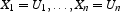
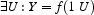

12 Logic Programming
多くの問題、特に人工知能(Artificial Intelligence)の領域で頻度の高いものは、他の場所でも見られます、例えば、オペレーションズリサーチは現在のところいくつかの探索と制約(constraint)の伝播(propagation)の形式によってのみ解決可能です(訳注:NP問題やSATソルバ等のキーワードで調べるといいかもしれません)。もしプログラミング言語が don't know 非決定性(nondeterminism)を提供する事により探索の詳細を抽象して排除するのであれば、そのような問題は正に適切に特定されます。論理プログラミングと Prolog はこの種の問題のために適した形式主義と考えられます。このチャプタでは私達は Oz での論理プログラミングと並行制約プログラミングの表し方について話します。論理プログラミングでは各手続きは論理文によって表現された関係として翻訳されます。私達は Oz と Prolog の間の関係と、いかに多くの Prolog プログラムが Oz プログラムに直接的に変換できるかについて話します。より進んだ制約解決技法のために、読者には Oz での制約プログラミングについての随伴チュートリアルに見えるかもしれません。
注意:このチャプタの内容はまだ不完全である事に注意して下さい。(訳注:というわけで訳も中途半端です。本家の文書化が終わってから見直したいと思います。)
12.1制約ストア(constraint store)
Oz のスレッドは変数の束縛が同等性形式で保存されるストアを共有しています:  ここで  は変数で は Oz のエンティティか変数です。制約ストアは、レコード、数、変数の名前、手続きを識別するユニークな名前、セル、チャンクの種々の型(クラス、オブジェクト、フューチャ、etc)に対応する Oz の値を含んでいます。概念的に、ストアは連言論理式(conjunctive logical formula)としてモデル化されます: ここで は変数で は Oz の値か変数で、 は と で発生した変数の和です。ストアは制約ストア(constraint store)と呼ばれます。Oz の 計算ストア(computation store)は制約ストア、手続きが位置している手続きストア、そしてセルとオブジェクト状態が位置しているセルストアから構成されています。
は変数で は Oz のエンティティか変数です。制約ストアは、レコード、数、変数の名前、手続きを識別するユニークな名前、セル、チャンクの種々の型(クラス、オブジェクト、フューチャ、etc)に対応する Oz の値を含んでいます。概念的に、ストアは連言論理式(conjunctive logical formula)としてモデル化されます: ここで は変数で は Oz の値か変数で、 は と で発生した変数の和です。ストアは制約ストア(constraint store)と呼ばれます。Oz の 計算ストア(computation store)は制約ストア、手続きが位置している手続きストア、そしてセルとオブジェクト状態が位置しているセルストアから構成されています。
12.2計算空間(computation space)
計算空間は一般的に計算ストアと実行中のスレッドの集合から構成されています。これまで私達が見てきたのは単一の計算空間です。論理プログラミングを扱う時、複数のネストした計算空間によってより凝った構造が現れるでしょう。計算空間の構造のための一般的なルールは以下のようになります。
そこには常に外部の世界とやりとりを行うスレッドがある最上位の計算空間が存在します。スレッドが最上位の空間のストアに充足しない(inconsistent)制約(束縛)を追加しようとすると、スレッドから失敗例外が発生します。充足しない制約の追加はアボートされ、制約ストアは常に充足した状態を保つでしょう。
スレッドは直接的または間接的にこのセクションで示されるようなローカルの計算空間を生成出来ます。新しい計算空間は子空間になり現在の計算空間は親空間になります。一般的に計算空間の階層が作られ得ます。
スレッドは常に一つの計算空間に所属しています。また、変数は一つの計算空間にのみ所属しています。
子空間のスレッドは、その空間と同様に全ての祖先の空間の変数を見る事が出来、またアクセス出来るかもしれません。逆は偽です。親空間のスレッドは、子空間が親空間に併合されない限り、子空間の変数を見る事が出来ません。その様な場合、子空間は消え去り、その内容全ては親空間に追加されます。空間の併合操作は明示的な操作、またはこのセクションで見る事になる非直接的な言語制約によって発生します。
子空間のスレッドはそれに可視な変数に制約(束縛)を追加します。これはその空間か祖先の空間に所属する変数を束縛出来るという事を意味します。束縛は現在の空間とその子孫空間でのみ可視です。
12.3制約の含意(entailment)と非含意(disentailment)
状態(condition) は の場合に  でストアされ、論理式として考えられ、論理的にストア に含まれ、再び論理式として考えられます。 の直観的含意は を既にそこにある情報を増加させないストアに追加する事を意味します。全ては既にそこにあります。
でストアされ、論理式として考えられ、論理的にストア に含まれ、再び論理式として考えられます。 の直観的含意は を既にそこにある情報を増加させないストアに追加する事を意味します。全ては既にそこにあります。
状態 は によって論理的に含まれる が否定(negation)の場合は非含意されます。非含意制約はストアに既にある情報によって非充足となります。
制約ストアは論理式であるので、私達は含意されている制約ストアもしくは他の制約ストアによって非含意されている制約ストアについて語る事が出来ます。空間 は が成立する場合、制約ストアによって が含意(非含意)される場合、他の空間 により含意(非含意)されます。
私達は非含意される(普通親空間によって)空間を失敗した空間(failed space)と呼びます。
12.3.1例
ストア と以下の状態について考えて下さい:
これは、この束縛は情報ストアを増加させないので、含意されます。
 これも含意されます。この情報を追加する事は私達の情報を増加させません。上の状態を充たす があります。私達は がどんな値を仮定しているか知らない事に注意して下さい。しかしどの値が によって仮定されても、状態は依然として充たされています。
 はストアによって含意されません、なぜならこの等価性の追加は を作る事によって情報ストアを増加させるからです。
はストアによって含意されません、なぜならこの等価性の追加は を作る事によって情報ストアを増加させるからです。  つまり は両方非含意となります、なぜならそれらは既に現れている情報と反するからです。これらは失敗例外を発生させるでしょう: この最上位の空間は普通ユーザにエラーメッセージを報告し、ここで劣位の空間は単に失敗します。
つまり は両方非含意となります、なぜならそれらは既に現れている情報と反するからです。これらは失敗例外を発生させるでしょう: この最上位の空間は普通ユーザにエラーメッセージを報告し、ここで劣位の空間は単に失敗します。
12.4選言(disjunction)
今私達は Oz の非決定的構築を理解する位置にいます。Oz は非決定的選択(nondeterminate choice)のためにいくつかの選言的構築を提供しており、それは don't know choice 文としても知られています。
12.4.1 or 文
私達が使おうとしている全ての選言の文は、節(clause)とガード(guard)の記法です。節はガード G と本体 S1 から構成され、以下の形式を持っています:
G then S1
ガード G は次の形式を持っています:
X1...XninS0
ここで変数 Xi は、スコープをガード部と本体部の両方に広げる事によって、実存的に定量化されます。
最初の選言の文は以下の形式を持っています:
orG1
thenS1G2
[]thenS2GN
...
[]thenSN
end
or 文は以下の意味論を持っています。スレッドは空間 SP の文を実行していると仮定する。
スレッドはブロックされる。
空間はガードを実行する新しいスレッドによって(with)生成されます。
父スレッドの実行は子空間の最大一つが失敗せずに帰ってくるまでブロックされたままです。
もし全ての子空間が失敗した場合、親スレッドはその空間の失敗状態をあげます。これは親スレッドの空間が最上位の空間であった場合、失敗例外が発生する事を意味します。それ以外の場合では、空間はローカルで、失敗した空間となります。
ただ一つの空間が対応する節
thenが失敗しないまま残ります。 がゴール(goal) と制約 に減らされるとも仮定して下さい。この場合、空間は親空間に併合されます。 とストアの変数は親空間のストアに追加されます。 は自身のスレッドで実行し、元々の一時停止しているスレッドは文 の実行を再開します。この実行のルールは Oz で unit commit と呼ばれます、なぜなら実行が単一の代替の選言(唯一残ったもの)をコミットするからです。
12.4.2短縮記法
orGi
...
[]
...
end
は次を意味します
orGi
...
[]then skip
...
end
or 文はどんな don't know 非決定性も導入しない事を観察して下さい。この様な文の実行はアクションの確定コース(determinate course)で働くまで待機します。
12.4.3Prolog との比較
or 文は Prolog で対応する構造には単純に書き換えられません。Prolog の選言 P ; Q は常にバックトラックの対象となる選択ポイント(choice point)を生成します。
12.5決定性駆動実行(Determinacy Driven Execution)
Oz の or 文は計算が決定性の状態に同期したプログラミングスタイルの純粋な論理形式を許します。以下のプログラムについて考えましょう。
proc {Ints N Xs}
or N = 0 Xs = nil
[] Xr in
N > 0 = true Xs = N|Xr
{Ints N-1 Xr}
end
end
local
proc {Sum3 Xs N R}
or Xs = nil R = N
[] X|Xr = Xs in
{Sum3 Xr X+N R}
end
end
in proc {Sum Xs R} {Sum3 Xs 0 R} end
end
local N S R in
thread {Ints N S} end
thread {Sum S {Browse}} end
N = 1000
end
スレッドが Ints を実行する時は N が分かるまで一時停止します、なぜならその選言で得られるものか決定出来ないので。同じ様に、Sum3 はリスト S が分かるまで待機するでしょう。S は漸増的に定義されるでしょう、また、それは Sum3 の中断と再開を導くでしょう。メインスレッドが N を 1000 に束縛した時に物事が動き出します。これは決定性駆動実行が擬似生産者/消費者の振る舞いに必要な同期情報を与えている事を明確に示します。
12.6条件(conditional)
12.6.1論理条件(logical condition)
論理条件は以下の形式を持つ文です。
condX1...XNinS0thenS1elseS2end
ここで Xi は新しく導入された変数で、Si は文です。X1 ... XN in S0 then S1 は条件の節で、S2 は代替です。
cond 文は以下の意味論を持っています。スレッドは空間 SP の文を実行していると仮定する。
スレッドはブロックされる。
空間 が、ガード部
condX1...XNinS0 を実行する単一のスレッドとともに生成されます。父スレッドの実行は が含意か非含意となるまでブロックされたままになります。これらの条件は決して起きない事に注意して下さい、例えば、いくつかのスレッド で一時停止か永遠に走る時。
が非含意なら、父スレッドは S2 で実行を続けます。
が含意なら、ストア と ローカル変数 に縮退(reduce)したと仮定します。この場合、空間は親空間に併合されます。 と は親空間に追加され、父スレッドは S1 の実行を続けます。
12.6.2Prolog との比較
cond 文は Prolog の条件 P -> Q ; R に大方対応するものとして単に記述されます。Oz は変数のスコープに関して少しより注意深く、ローカル変数 Xi は明示的に導入されなければなりません。cond X in P then Q else R end は常に論理の意味論 を持っており、それは Oz の論理部分にべったり依存しています。これは Prolog では常に true であるわけではありません。
12.6.3並列(parallel)の条件
並行条件は次の形式です
condG1thenS1G2
[]thenS2SN
...
elseend
並行条件は全ての条件 G1 ... G(N-1) を任意(arbitrary)の順で評価する事で実行され、それぞれの自らの空間を持っており、おそらく並行性を持ちます。空間の一つが Gi と言って、含意されると、対応する文 Si が父スレッドによって選択されます。全ての空間が失敗すると、else 文 SN が選択され、そうでなければスレッドの実行は一時停止します。
並行条件は主に並行プログラミングにおいて有用です、例えば特定のイベントでタイムアウトするかどうかのプログラミングのために。この構造は並行論理プログラミング言語(comitted-choice 言語としても知られる)で基本的な構造です。
並行論理プログラミングの典型例として、2つのストリーム Xs と Ys の到着のタイミングが結果ストリーム Zs の順番を決定するような、非決定バイナリマージを定義しましょう。
proc {Merge Xs Ys Zs}
cond
Xs = nil then Zs = Ys
[] Ys = nil then Zs = Xr
[] X Xr in Xs = X|Xr then Zr in
Zs = X|Zr {Merge Xr Ys Zr}
[] Y Yr in Ys = Y|Yr then Zr in
Zs = Y|Zr {Merge Xs Yr Zr}
end
end この一般的なバイナリストリームマージは非効率的です、複数のこれらがシンプルなサーバスレッドへの複数スレッドの接続として使われるとなおさらです。定時間の複数マージ演算を実装するための効率的な方法はセルとストリームを代わりに使う事によって下で定義されます。手続き {MMerge STs L} はどちらも nil かもしれない2つの引数 STs を取ります、マージするためのストリームのリスト、または形式 merge(ST1 ST2) ここで各 STi は再び同じ形式 STs として。
proc {MMerge STs L}
C = {NewCell L}
proc {MM STs S E}
case STs
of ST|STr then M in
thread
{ForAll ST proc{$ X} ST1 in {Exchange C X|ST1 ST1} end}
M=S
end
{MM STr M E}
[] nil then skip
[] merge(STs1 STs2) then M in
thread {MM STs1 S M} end
{MM STs2 M E}
end
end
E
in
thread {MM STs unit E} end
thread if E==unit then L = nil end end
end バイナリマージ {Merge X Y Z} は単に {MMerge [X Y] Z} となります。
12.7非決定性(nondeterministic)プログラムと探索(search)
Oz は Prolog と同じくらい多くの非決定性と探索試行プログラミングを許します。この種のプログラミングは Prolog とは少し違った風味があります。Prolog はバックトラック(backtrack)を基礎としたデフォルトの探索戦略とともにありますが、Oz はプログラマに問題固有の非決定性から分離し直交した方法で彼らに適した探索戦略を工夫する事を許します。
これを Oz で行うには、選択点(choice point)がどの様に探られるかを指定する事なしに選択点を生成する言語的構造を指定しなくてはいけません。完全に分離したプログラムは探索戦略を指定出来ます。
12.7.1 dis 構造
以下のプログラムは Oz の dis 構造を使って必要時に選択点を生成しています。
proc {Append Xs Ys Zs}
dis
Xs = nil Ys = Zs then skip
[] X Xr Zr in
Xs = X|Xr Zs = X|Zr then
{Append Xr Ys Zr}
end
endこれは大体において Prolog の append/3 プログラムに対応します:
append([], Ys, Ys).
append([X|Xr], Ys, [X|Zr]) :- append(Xr, Yr, Zr).実際に or のために保持されている略語の同じ種が dis のためにも保持されています。これは上のプログラムが以下の略語の形式を持っているという事です。
proc {Append Xs Ys Zs}
dis
Xs = nil Ys = Zs
[] X Xr Zr in
Xs = X|Xr Zs = X|Zr then
{Append Xr Ys Zr}
end
end以下の手続き呼び出しを仮定して下さい:
local X in
{Append [1 2 3] [a b c] X}
{Browse X}
endこれは or 構造と全く同じ振る舞いをするでしょう、つまり、これは決定性で X を [1 2 3 a b c] に束縛するでしょう。もし私達が他方を試すと:
local X Y in
{Append X Y [1 2 3 a b c]}
{Browse X#Y}
end その振る舞いは or 構造によるものと同じに見えるでしょう; この順列の呼び出しによるスレッド実行は {Append X Y [1 2 3 a b c]} の実行の間一時停止するでしょう。しかしそこには違いがあります。. Append の呼び出しは選択点を2つの代替とともに生成するでしょう:
X = nil Y = [1 2 3 a b c] then skipXr Xr in
X = 1|Xr Zr = [2 3 a b c] then
{Append Xr Y Zr}
12.7.2定義節文法(Define Clause Grammer)
Sentence(P) --> NounPhrase(X P1 P) VerbPhrase(X P1)
NounPhrase(X P1 P) --> Determiner(X P2 P1 P) Noun(X P3) RelClause(X P3 P2)
NounPhrase(X P P) --> Name(X)
VerbPhrase(X P) --> TransVerb(X Y P1) NounPhrase(Y P1 P) | InstransVerb(X P)
RelClause(X P1 and(P1 P2)) --> [that] VerbPhrase(X P2)
RelClause(_ P P) --> []
Determiner(X P1 P2 all(X imp(P1 P2))) --> [every]
Determiner(X P1 P2 exits(X and(P1 P2))) --> [a]
Noun(X man(X)) --> [man]
Noun(X woman(X)) --> [woman]
name(john) --> [john]
name(jan) --> [jan]
TransVerb(X Y loves(X Y)) --> [loves]
IntransVerb(X lives(X)) --> [lives]
proc {Sentence P S0#S}
X P1 S1 in
{NounPhrase X P1 P S0#S1}
{VerbPhrase X P1 S1#S}
end
proc {NounPhrase X P1 P S0#S}
choice
P2 P3 S1 S2 in
{Determiner X P2 P1 P S0#S1}
{Noun X P3 S1#S2}
{RelClause X P3 P2 S2#S}
[] {Name X S0#S}
P1 = P
end
end
proc {VerbPhrase X P S0#S}
choice
Y P1 S1 in
{TransVerb X Y P1 S0#S1}
{NounPhrase Y P1 P S1#S}
[] {IntransVerb X P S0#S}
end
end
proc {TransVerb X Y Z S0#S}
S0 = loves|S
Z = loves(X Y)
end
proc {IntransVerb X Y S0#S}
S0 = lives|S
Y = lives(X)
end
proc {Name X S0#S}
S0 = X|S
choice
X = john
[]
X = jan
end
end
proc {Noun X Y S0#S}
choice
S0 = man|S
Y = man(X)
[] S0 = woman|S
Y = woman(X)
end
end
proc {Determiner X P1 P2 P S0#S}
choice
S0 = every|S
P = all(X imp(P1 P2))
[] S0 = a|S
P = exists(X and(P1 P2))
end
end
proc {RelClause X P1 P S0#S}
P2 in
choice
S1 in
S0 = that|S1
P = and(P1 P2)
{VerbPhrase X P2 S1#S}
[] S0 = S
P = P1
end
end
declare
proc {Main P}
{Sentence P [every man that lives loves a woman]#nil}
end12.7.3いくつかの探索手続き
12.7.4dis 構造
declare Edge
proc {Connected X Y}
dis
{Edge X Y}
[] Z in {Edge X Z} {Connected Z Y}
end
end
proc {Edge X Y}
dis
X = 1 Y = 2
[] X = 2 Y = 1
[] X = 2 Y = 3
[] X = 3 Y = 4
[] X = 2 Y = 5
[] X = 5 Y = 6
[] X = 4 Y = 6
[] X = 6 Y = 7
[] X = 6 Y = 8
[] X = 1 Y = 5
[] X = 5 Y = 1
end
end
{ExploreOne
proc {$ L}
X Y in
X#Y = L {Connected X Y}
end
}
{Browse
{SearchAll
proc {$ L}
X Y in
X#Y = L {Connected X Y}
end
}}12.7.5否定(negation)
proc {NotP P}
{SearchOne proc {$ L} {P} L=unit end $} = nil
end
proc {ConnectedEnh X Y Visited}
dis
{Edge X Y}
[] Z in
{Edge X Z}
{NotP proc{$} {Member Z Visited} end}
{ConnectedEnh Z Y Z|Visited}
end
end
12.7.6動的述語(dynamic predicate)
proc {DisMember X Ys}
dis Ys = X|_ [] Yr in Ys = _|Yr {DisMember X Yr} end
end
class DataBase from BaseObject
attr d
meth init
d := {NewDictionary}
end
meth dic($) @d end
meth tell(I)
case {IsFree I.1} then
raise database(nonground(I)) end
else
Is = {Dictionary.condGet @d I.1 nil} in
{Dictionary.put @d I.1 {Append Is [I]}}
end
end
meth ask(I)
case {IsFree I} orelse {IsFree I.1} then
{DisMember I {Flatten {Dictionary.items @d}}}
else
{DisMember I {Dictionary.condGet @d I.1 nil}}
end
end
meth entries($)
{Dictionary.entries @d}
end
end
declare
proc {Dynamic ?Pred}
Pred = {New DataBase init}
end
proc {Assert P I}
{P tell(I)}
end
proc {Query P I}
{P ask(I)}
end
EdgeP = {Dynamic}
{ForAll
[edge(1 2)
edge(2 1) % Cycle
edge(2 3)
edge(3 4)
edge(2 5)
edge(5 6)
edge(4 6)
edge(6 7)
edge(6 8)
edge(1 5)
edge(5 1) % Cycle
]
proc {$ I} {Assert EdgeP I} end
}